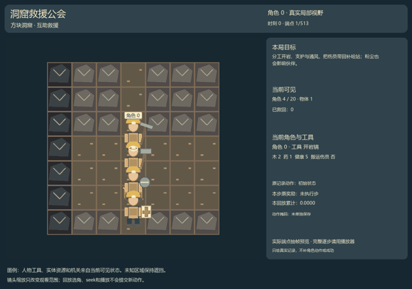
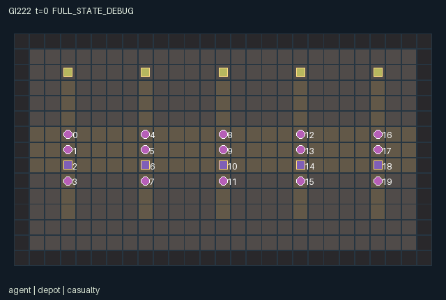

GI222 / SPATIAL
洞窟救援公会 · Cavern Rescue Guilds
分工开岩、支护与通风，把伤员带回补给站；粉尘也会影响伙伴。
Original saved demonstration
Recorded native state, often authored scripts or interventions; information scope and failures are preserved in the original provenance. This is a saved demonstration, not live browser play.

Release verification episode
Untrained uniform legal actions. Actual JAX state sampled along the full original episode; full-state debug camera. No human performance or learning claim.

Run this game
crucibles play --game 222
Start Python locally, then open the address printed by the terminal. Installation, multiplayer, takeover and keyboard controls →
Objective, rewards & ending
Exact task contract
{
"objective": "Evacuate all five casualties through excavated caverns; sustain shared air and infrastructure while provisioning other crews.",
"natural_termination": "Natural completion exactly when rescued == 5; otherwise truncate at 512. Health never falls below 1, so injured actors remain controllable.",
"interaction": "Excavation opens native tiles and emits spreading dust. Duct pumping changes nearby air; beams prevent dust-triggered floor collapse. Carried casualties follow actors to depots; shared supplies and hauling routes change other actors' opportunities.",
"observation_access": "Self fields and declared public counters/charts are exact. For each entity slot, visibility is active AND Chebyshev distance <= 3 from the role's current position; hidden slots have visible=0 and all values zero. Actor slots use the same radius. Patches cover dx,dy -3..3 in row-major order, outside=-1. Public static bounds, indexing and action meanings do not expose hidden current state. Legal masks are native affordance information; no renderer-only policy information. Human and policy actors use the same scalar action and transition."
}Declared per-step reward bounds: -1 to 30. Observability: partially_observable.
Rules
- 20 miners in five crews share a connected cavern. Move or face, mine, build and carry people through the actual map.
- Tools 0 pick, 1 builder, 2 ventilator, 3 medic can be cycled at a depot. Build actions use one wood.
- Dig only the facing rock cell. Dust spreads through open cardinal neighbors; high dust injures workers and can collapse unsupported empty floor every 24 ticks.
- Stand on a duct to pump. Support beams, rails and winches replace ordinary floor and persist. Rail haul needs two clear rail/winch cells ahead.
- A medic lifts a nearby casualty only after its rock cell is cleared; a winch extends lift reach to three cells. Arrival near any depot evacuates the passenger.
- Adjacent transfers choose the nearest actor, then lowest index. Foreign depots accept at most two rewarded wood donations.
- All actors remain actionable. Health 1-2 slows movement; treatment restores health to 5. All five rescues finish the episode.
Original mechanism document (historical status wording retained)
# Cavern Rescue Guilds Status: AUTHORED_NOT_EXECUTED. Initial proposal, attempt 00, feedback_used=0. All scripts are unexecuted source-derived hypotheses. Native interface: A=20, O=344, U=18, H=512. Every counted actor has a scalar int32 action and its own float32 observation/reward and bool done row. The family is block_survival. Evacuate all five casualties through excavated caverns; sustain shared air and infrastructure while provisioning other crews. Interdependence: a miner can improve access while imposing dust on nearby workers; a ventilator can spend wood on a duct instead of donating it; a carpenter can trade support safety for faster hauling. Winch/rail routes and walking rescue routes are alternatives. Donations are bounded first receipts, not a repeatable pickup/redeposit reward. Layout and initial supplies are deterministic; key is intentionally unused. Rules and physical meanings: - 20 miners in five crews share a connected cavern. Move or face, mine, build and carry people through the actual map. - Tools 0 pick, 1 builder, 2 ventilator, 3 medic can be cycled at a depot. Build actions use one wood. - Dig only the facing rock cell. Dust spreads through open cardinal neighbors; high dust injures workers and can collapse unsupported empty floor every 24 ticks. - Stand on a duct to pump. Support beams, rails and winches replace ordinary floor and persist. Rail haul needs two clear rail/winch cells ahead. - A medic lifts a nearby casualty only after its rock cell is cleared; a winch extends lift reach to three cells. Arrival near any depot evacuates the passenger. - Adjacent transfers choose the nearest actor, then lowest index. Foreign depots accept at most two rewarded wood donations. - All actors remain actionable. Health 1-2 slows movement; treatment restores health to 5. All five rescues finish the episode. Transition order and controls: The native joint vector is processed in rotating actor order (k+t) modulo A. An actor checks its action against current state at its turn; a resource lost to an earlier actor converts the action to wait. Out-of-range input becomes wait. Nonterminal movement codes always allow facing even when walking is blocked; occupancy and terrain control actual movement. Ties for nearby targets choose minimum Manhattan distance, then lowest index. No direction action teleports through a blocked walking cell. All spatial updates, resources and tool effects are in candidate.py:L137-L184 (actor). Movement/collision is in candidate.py:L54-L65 (move_actor) and candidate.py:L116-L118 (passable). Exact contextual masks are in candidate.py:L120-L135 (choices); mask assembly is in candidate.py:L23-L25 (mask_row) and candidate.py:L27-L29 (legal_actions). The world updates production/ecology/hazards after actor actions. These delayed effects and reward components are in candidate.py:L186-L215 (raw_step). Rewards and finite bounds: Each successful evacuation adds 5 to every member of the carrier's crew and 0.4 to every actor. A foreign-depot wood donation adds 0.4 to its donor, with two receipts per depot. A build or medical treatment costs its actor 0.02. A dust-injury tick costs the injured actor 0.1 and every actor 0.005 per injured worker. At most five rescues and twenty injury flags occur in a step; [-1,30] safely contains these components. No reward clipping is used. Observation entries are float32 in [-2,65536]. This loose finite envelope includes coordinates, codes, quantities and cumulative counters; at most A*H <= 49152 actor actions can contribute to a counter in one episode. It is a representational bound, never a performance threshold. Exact observation layout: - Columns [0,9): Self x,y,crew,tool,wood,medicine,health,carrying,face. Access: self. - Columns [9,11): Clock t; total rescued. Access: public. - Columns [11,191): 20 actor slots, width 9: visible,x,y,crew,tool,wood,medicine,health,carrying. Access: local. - Columns [191,221): 5 depot slots, width 6: visible,x,y,wood,medicine,foreign-aid receipts. Access: local. - Columns [221,246): 5 casualty slots, width 5: visible,x,y,bearer,active. Access: local. - Columns [246,295): 7x7 terrain patch in y-major order, dx/dy -3..3; outside=-1. Access: local. - Columns [295,344): 7x7 dust patch, same ordering; outside=-1. Access: local. Self fields and declared public counters/charts are exact. For each entity slot, visibility is active AND Chebyshev distance <= 3 from the role's current position; hidden slots have visible=0 and all values zero. Actor slots use the same radius. Patches cover dx,dy -3..3 in row-major order, outside=-1. Public static bounds, indexing and action meanings do not expose hidden current state. Legal masks are native affordance information; no renderer-only policy information. Human and policy actors use the same scalar action and transition. The observer construction is candidate.py:L217-L223 (observe). Entity/map masks are regenerated in candidate.py:L31-L40 (refresh). Masked entity flattening and patch boundaries are candidate.py:L42-L44 (visible_rows) and candidate.py:L46-L52 (patch). No role-view animation may expose hidden state or use full-state event arrays as public announcements. Only the declared public counters are scene events. Declared persistent state and invariants: Initial arrays, positions, resource stocks and integer/bool representations are defined in candidate.py:L79-L105 (reset). The manifest declares every reset key exactly once. Every state leaf keeps a fixed shape; positions are [x,y], maps are indexed [y,x], and all actors remain active through termination. Native actor positions are unique; non-agent objects may share a cell with an actor when the mechanic permits it. Analytical ranges used during author review: wood in [0,4]; med in [0,2]; health in [1,5]; dust in [0,8]; depot_aid in [0,2]; rescued in [0,5]. These are source assertions awaiting independent native checking. Termination: Natural completion exactly when rescued == 5; otherwise truncate at 512. Health never falls below 1, so injured actors remain controllable. The terminal helper candidate.py:L67-L77 (end_step) increments t once for nonterminal input, gives natural completion priority over horizon truncation, and preserves all leaves and causes on already-terminal input with zero rewards. Joint dones agree with done_all. No reset occurs inside raw_step. Source-derived partner intervention: Excavate (5) versus wait (0), at the first branch step. Only branch A is intended to open cell [3,2] and emit dust. Common waiting lets the local dust field change other actors' patch observations and makes a cleared casualty available to a later medic. No effect magnitude or successful rescue is claimed. The two full literal diagnostic scripts and both paired suffixes are in playthrough.json. They are dimension/range-checked as JSON only. Prefix and branch actions were chosen from rules, not searched, simulated or replayed. They are not a solvability, success-rate or causal-effect receipt. Presentation and provenance: The scene binds the exact source and manifest hashes, actual position/active/visibility leaves, tile map, actions and observed attributes. Crew index, actor identity, current tool and object state support later camera/actor selection. Scene metadata is delivered; native animation, RGB rendering and a human-play UI have not been executed or accepted. Any human control must call the same native transition as a policy. The sanitized authority and scope files govern these initial ordinals and current counts. Historical count examples are not applied. All input files are enumerated with bytes/SHA256 and truthful semantic-read scope in author_input_freeze.json. Five allowed official reference snapshots were hashed for integrity only; their contents were not used as design/code inputs. No upstream code or commercial art was copied. All small integer quantities use int32; no uint32 PRNG key is duplicated in state. Requested model configuration is gpt-6-astra/max; this author self-report does not establish provider model identity or token/cost telemetry. Evidence boundary: Only source AST screening, data-schema checking, symbolic observation-width accounting, reset-key coverage and literal-script structure checking were performed. No candidate was imported or executed; no JAX/numpy simulation, native reset/step, R0, eager/JIT/vmap comparison, benchmark, training, heldout evaluation, browser or downstream feedback was used. Intra-author static corrections to whitelist-rejected constructs occurred before this initial freeze and are recorded in generation_record.json. Native compatibility, replay legality, strategic richness, solvability, learning, UI quality and transfer remain unestablished.
Commands
Roles & abilities
agent_0 crew 0 / initial pick miner / actor 0
agent_1 crew 0 / initial support carpenter / actor 1
agent_2 crew 0 / initial ventilator / actor 2
agent_3 crew 0 / initial field medic / actor 3
agent_4 crew 1 / initial pick miner / actor 4
agent_5 crew 1 / initial support carpenter / actor 5
agent_6 crew 1 / initial ventilator / actor 6
agent_7 crew 1 / initial field medic / actor 7
agent_8 crew 2 / initial pick miner / actor 8
agent_9 crew 2 / initial support carpenter / actor 9
agent_10 crew 2 / initial ventilator / actor 10
agent_11 crew 2 / initial field medic / actor 11
agent_12 crew 3 / initial pick miner / actor 12
agent_13 crew 3 / initial support carpenter / actor 13
agent_14 crew 3 / initial ventilator / actor 14
agent_15 crew 3 / initial field medic / actor 15
agent_16 crew 4 / initial pick miner / actor 16
agent_17 crew 4 / initial support carpenter / actor 17
agent_18 crew 4 / initial ventilator / actor 18
agent_19 crew 4 / initial field medic / actor 19
Observation permissions
Training receives only the original observation rows. Role cameras use declared visibility; debug cameras are explicitly marked. Local benchmark records log debug exposure and role takeover history.
Exact observation layout
[
{
"slice": [
0,
9
],
"meaning": "Self x,y,crew,tool,wood,medicine,health,carrying,face.",
"visibility": "self"
},
{
"slice": [
9,
11
],
"meaning": "Clock t; total rescued.",
"visibility": "public"
},
{
"slice": [
11,
191
],
"meaning": "20 actor slots, width 9: visible,x,y,crew,tool,wood,medicine,health,carrying.",
"visibility": "local"
},
{
"slice": [
191,
221
],
"meaning": "5 depot slots, width 6: visible,x,y,wood,medicine,foreign-aid receipts.",
"visibility": "local"
},
{
"slice": [
221,
246
],
"meaning": "5 casualty slots, width 5: visible,x,y,bearer,active.",
"visibility": "local"
},
{
"slice": [
246,
295
],
"meaning": "7x7 terrain patch in y-major order, dx/dy -3..3; outside=-1.",
"visibility": "local"
},
{
"slice": [
295,
344
],
"meaning": "7x7 dust patch, same ordering; outside=-1.",
"visibility": "local"
}
]Entity visibility & attributes
[
{
"id": "agent",
"kind": "agent",
"count": 20,
"position": [
"pos"
],
"active": [
"agent_active"
],
"visibility": [
"agent_visible"
],
"attributes": [
{
"state_path": [
"crew"
],
"meaning": "Native crew index",
"display": "category"
},
{
"state_path": [
"tool"
],
"meaning": "Current tool code",
"display": "category"
},
{
"state_path": [
"wood"
],
"meaning": "Carried timber units",
"display": "number"
},
{
"state_path": [
"med"
],
"meaning": "Carried medicine units",
"display": "number"
},
{
"state_path": [
"health"
],
"meaning": "Worker health",
"display": "number"
},
{
"state_path": [
"carrying"
],
"meaning": "Actor carries a casualty",
"display": "flag"
}
]
},
{
"id": "depot",
"kind": "resource",
"count": 5,
"position": [
"depot_pos"
],
"active": [
"depot_active"
],
"visibility": [
"depot_visible"
],
"attributes": [
{
"state_path": [
"depot_wood"
],
"meaning": "Depot timber stock",
"display": "number"
},
{
"state_path": [
"depot_med"
],
"meaning": "Depot medicine stock",
"display": "number"
},
{
"state_path": [
"depot_aid"
],
"meaning": "Foreign wood donations received, capped at two",
"display": "number"
}
]
},
{
"id": "casualty",
"kind": "object",
"count": 5,
"position": [
"casualty_pos"
],
"active": [
"casualty_active"
],
"visibility": [
"casualty_visible"
],
"attributes": [
{
"state_path": [
"bearer"
],
"meaning": "Carrier actor index; -1 awaiting rescue",
"display": "category"
}
]
}
]Actual verification & provenance
Per-game execution receipt
{
"game": "gi222",
"status": "PASS",
"verification_revision": 2,
"source_sha256": "79c337638b54d537f4bbf30ac2e2a38c0a1dd3718e22d14e98d9035079f7ee51",
"seed": 20261101,
"runtime": {
"jax": "0.4.38",
"numpy": "1.26.4",
"devices": [
"TFRT_CPU_0"
]
},
"dimensions": {
"num_agents": 20,
"observation_size": 344,
"num_actions": 18,
"max_steps": 512
},
"checks": {
"eager_reset": {
"status": "PASS",
"seconds": 3.9341392517089844
},
"observation_spaces_legal_masks": {
"status": "PASS",
"seconds": 0.6033134460449219
},
"eager_step": {
"status": "PASS",
"seconds": 2.9865734577178955
},
"jit_reset": {
"status": "PASS",
"seconds": 0.29995179176330566
},
"jit_step": {
"status": "PASS",
"seconds": 1.222926139831543
},
"eager_jit_integer_parity_float_measurement": {
"status": "PASS",
"seconds": 0.001779317855834961
},
"jit_vmap_reset": {
"status": "PASS",
"seconds": 0.3879663944244385
},
"jit_vmap_step": {
"status": "PASS",
"seconds": 1.9137322902679443
},
"outer_autoreset_api": {
"status": "PASS",
"seconds": 1.5321505069732666
},
"full_original_horizon_episode_and_render": {
"status": "PASS",
"seconds": 2.05322527885437
}
},
"human_scores": null,
"browser_controls": "PENDING",
"failures": [],
"elapsed_seconds": 15.825777053833008,
"float_parity_max_abs": 0.0,
"numerical_parity": "EXACT",
"raw_terminal_absorbing": "PASS",
"terminal_outer_reset": "PASS",
"episode_steps": 512,
"scripted_random_returns": [
0.2100000185891986,
-0.6499999901279807,
-0.8899999847635627,
-1.3100000070407987,
-0.8499999875202775,
-0.8899999829009175,
-0.5899999812245369,
-1.0099999867379665,
-1.4300000173971057,
-2.2300000321120024,
0.17000003065913916,
-1.1699999999254942,
-2.0300000328570604,
-0.08999997563660145,
-1.0900000017136335,
-0.669999985024333,
-1.670000028796494,
-1.1499999985098839,
-1.1300000064074993,
-1.2099999962374568
],
"terminal": true,
"demo_information": "FULL_STATE_DEBUG",
"demo_frames": 26,
"render_roles_checked": 20
}Chromium control verification
{
"status": "PENDING"
}Original identity and file hashes
{
"id": 222,
"key": "gi222",
"title": "洞窟救援公会 · Cavern Rescue Guilds",
"summary": "分工开岩、支护与通风，把伤员带回补给站；粉尘也会影响伙伴。",
"tags": [
"方块工程",
"20角色"
],
"family": "spatial",
"dimensions": {
"num_agents": 20,
"observation_size": 344,
"num_actions": 18,
"max_steps": 512
},
"source_sha256": "79c337638b54d537f4bbf30ac2e2a38c0a1dd3718e22d14e98d9035079f7ee51",
"manifest_sha256": "ff0436b0862f21d7db018eba35cf882b7b51bb68da7c287f2e7eff2caeceb0fe",
"files": [
{
"file": "candidate.py",
"sha256": "79c337638b54d537f4bbf30ac2e2a38c0a1dd3718e22d14e98d9035079f7ee51",
"bytes": 13927,
"origin": "work/exp_2/game_incubator_v3/community_games222_225_visualization_root222_v1/native154_candidate/registry/v2/games/game-v3-00222/candidate.py"
},
{
"file": "manifest.json",
"sha256": "ff0436b0862f21d7db018eba35cf882b7b51bb68da7c287f2e7eff2caeceb0fe",
"bytes": 14891,
"origin": "work/exp_2/game_incubator_v3/community_games222_225_visualization_root222_v1/native154_candidate/registry/v2/games/game-v3-00222/manifest.json"
},
{
"file": "scene.json",
"sha256": "227c9702e30b4a369794dd576ac77ae29ff7365c3f59ec2345874bb89d35dbcb",
"bytes": 6861,
"origin": "work/exp_2/game_incubator_v3/community_games222_225_visualization_root222_v1/native154_candidate/registry/v2/games/game-v3-00222/scene.json"
},
{
"file": "mechanism.md",
"sha256": "9380e0123c066738ec0585cf417215795f61b4441fb77f357f9820fee911125e",
"bytes": 8766,
"origin": "work/exp_2/game_incubator_v3/sources/game-v3-00222/attempt_00/mechanism.md"
},
{
"file": "playthrough.json",
"sha256": "17a76118f863e1be039d54ac5e48b2621b1d5bdeabac70778d89a9fab5b002d5",
"bytes": 7264,
"origin": "work/exp_2/game_incubator_v3/sources/game-v3-00222/attempt_00/playthrough.json"
}
],
"original_status": "NATIVE154_REFERENCE",
"original_saved_replay": true,
"release_validation": "PASS",
"human_scores": null,
"browser_validation": "PENDING"
}